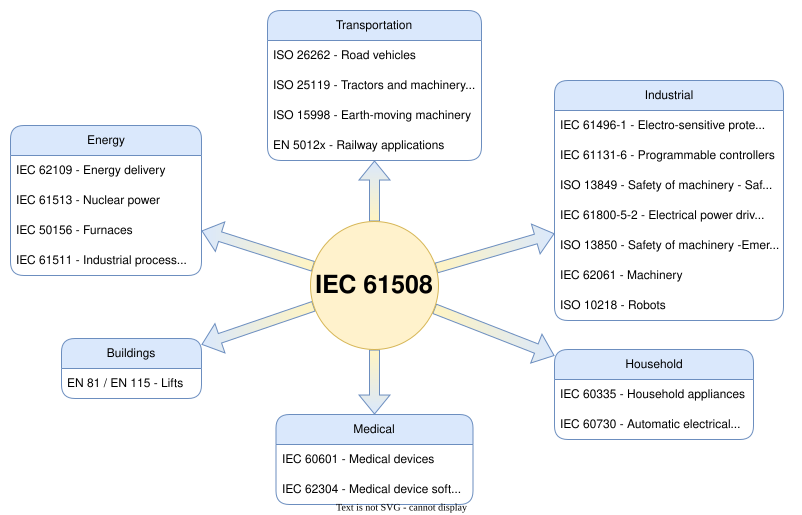
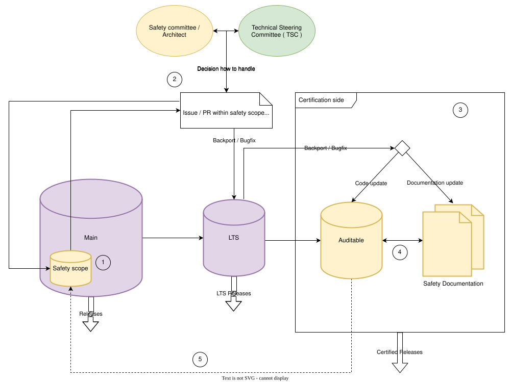

Zephyr 功能安全概述
简介
本文档是功能安全文档，概述了与功能安全相关的活动，以及 Zephyr 项目和 Zephyr 安全工作组/委员会力图实现的目标。
本概述面向对 Zephyr RTOS 功能安全开发部分感兴趣的人员，以及希望为项目的功能安全方面做出贡献的项目成员。
概述
本节向读者概述功能安全认证的总体目标、我们力求达到的标准，以及为获得此类功能安全认证而需要实施的质量标准和流程。
功能安全文档更新
本文档是一份持续更新的文档，可能会随着新需求、准则或流程的引入而不断演进。
相关方将通过向 Zephyr 文档仓库提交 PR 的方式提交变更。
Zephyr 安全委员会将审查这些变更，并提供反馈或接受变更。
变更一经接受，即成为本文档的一部分。
总体功能安全范围
安全委员会的总体目标是，在有限的源代码范围内（参见认证范围，待定）获得 IEC 61508 标准的认证，达到安全完整性等级（SIL）3/系统能力（SC）3。由于代码库是已有的，我们采用 IEC 61508 标准定义的 3s/1s 路线方法。
- 路线 3s
对非合规开发的评估。基本上就是针对现有源代码的路线 1s。
- 路线 1s
合规开发。遵守本标准中关于避免和控制软件系统性故障的要求。
IEC 61508 标准概要
IEC 61508 标准是一项广受认可的国际标准，用于电气、电子和可编程电子安全相关系统的功能安全。以下是该标准中一些关键功能安全方面的概述：
危害与风险分析：IEC 61508 标准要求对与系统相关的潜在危害和风险进行全面分析，以确定将这些风险降低到可接受水平所需的适当安全措施等级。
安全完整性等级（SIL）：该标准引入了安全完整性等级（SIL）的概念，用于划分每个安全功能所需的风险降低程度。SIL 越高，所需的风险降低程度就越大。
系统设计：IEC 61508 标准要求采用系统化的方法进行系统设计，包括识别安全需求、制定安全计划，以及使用适当的安全技术和措施，以确保系统达到所需的 SIL。
验证与确认：该标准要求对安全相关系统进行严格的测试和评估，以确保其达到规定的 SIL 和其他安全需求。这包括验证系统设计、确认系统功能，以及对系统进行持续的监控和维护。
文档与可追溯性：IEC 61508 标准要求有完善的文档流程，以确保安全相关系统的所有方面都被完整记录，并且从安全需求到最终系统设计和实现都具有完全的可追溯性。
总的来说，IEC 61508 标准为安全相关系统的设计、开发和实现提供了一个框架，旨在降低事故风险、提高整体安全性。遵循该标准，组织可以确保其安全相关系统按照最高的安全完整性等级进行设计和实现。
为什么选择 IEC 61508？
之所以选择 IEC 61508 标准，是因为它是一项适用于各个行业领域的基础功能安全标准。它提供了一个完善的框架，可作为不同行业特定标准的基础。由于 Zephyr 操作系统用途广泛，可以有效地应用于众多行业领域，因此 IEC 61508 对 Zephyr 尤为适用。
下图展示了 IEC 61508 标准与其他相关标准之间的关系：

质量
质量是整个行业对软件的必然要求。项目的代码库必须达到多项软件质量目标，才能从功能安全的角度被视为可审计代码库，并可用于认证目的。但软件质量并不是功能安全标准带来的额外要求。功能安全将质量视为既有的前提条件，因此无论功能安全目标如何，任何项目都应追求“质量受控”（quality managed）状态。以下列表描述了实现可审计代码库需要达到的质量目标：
基本软件质量标准——功能安全视角
在本章中，安全委员会说明了为什么需要将上面列出的质量目标作为前提条件，以及从功能安全角度实现可审计代码库需要做哪些工作。总的来说，所有这些与功能安全相关的质量措施都是为了尽量降低代码开发过程中的错误率。
编码准则
编码准则是工业软件产品形成共同理解、统一规则集和统一开发风格的基础。对功能安全而言，编码准则至关重要，而且除了统一规则集之外还有另一个目的：还需要证明开发者遵循了统一的开发风格，以防止在软件开发过程中出现 系统性错误，从而尽量降低整个软件系统的总体 错误率。
此外，IEC 61508 标准 也将使用编码标准/准则作为降低出错可能性的前提条件和建议。
项目 TSC 和项目安全委员会已商定采用分阶段、渐进式的方法来遵守一套编码规则（即编码准则），以提高代码库的质量和一致性。以下是商定的各个阶段：
- 第 I 阶段（已完成）
编码准则规则已可供遵循和参考，但不强制执行。这些规则尚未在 CI 中强制执行，审查者/批准者也不能因违规而阻止 PR。
- 第 II 阶段
对于整个代码库中的 PR，审查者/批准者可以因其违反编码准则而阻止 PR。
开始在有限的代码库范围内强制执行。最初，这一范围将是功能安全认证范围。对于易于在整个代码库中应用的规则，不应将合规要求局限于初始范围。这一步需要工具、CI 配置和强制执行策略。
- 第 III 阶段
重新审视编码准则规则，并根据前几个阶段的经验，对选定的规则进行细化和迭代。
- 第 IV 阶段
将强制执行扩大到更广泛的代码库。在给出适当理由的情况下，代码库的某些领域可以获得豁免。豁免需要 TSC 批准。
备注
可以随时通过提交 GitHub issue/RFC 来删除或修改编码准则规则。
重要
当前阶段： 目前正在研究完成 第 II 阶段 的前提条件：工具正在评估中，CI 配置和 强制执行策略 正在制定中。
需求与需求追溯
需求和需求管理不仅对软件开发很重要，对功能安全也非常重要。一方面，它在技术层面上详细规定和描述了软件应该做什么；另一方面，它是验证所描述的功能是否按预期实现的重要且必要的工具。为此，需要将需求一直追溯到代码层面。有了需求管理和追溯，就可以验证功能是否已被正确测试和实现，从而尽量降低系统性错误率。
此外，IEC 61508 标准也强烈推荐（对认证而言实际上是必备的）需求和需求追溯。
测试覆盖率
反过来，高测试覆盖率是功能安全的证据，表明代码完全符合其开发目的，不会执行任何意外的指令。如果整个代码都经过测试并具有很高的（理想情况下为 100%）测试覆盖率，还有一个额外的好处：能够快速发现错误的变更，进一步降低错误率。但必须注意，功能安全对测试覆盖率有不同的要求，必须考虑 IEC 61508 标准针对 SIL 3/SC3 目标规定的各种指标。除其他要求外，必须满足以下条件：
结构测试覆盖率（入口点）100%
结构测试覆盖率（语句）100%
结构测试覆盖率（分支）100%
如果无法达到 100%（例如防御性代码的语句覆盖率），则需要在文档中对该部分进行描述并说明理由。
软件架构设计原则
为了创建和维护结构化的软件产品，还需要考虑各个软件架构设计，并按照功能安全标准来实现它们，因为有些设计和实现在功能安全上并不合理；这样整个软件和代码库才能作为可审计代码使用。不过，这些软件架构设计大多已在 Zephyr 项目中实现，需要由安全委员会/安全工作组和安全架构师进行验证。
分层架构模型
IEC 61508 标准 强烈推荐采用模块化的软件架构方法。Zephyr 项目从一开始就通过其分层架构采用了这种方法。这种架构的思想是将功能相似的模块或组件组织成层，从而为每一层在系统中分配特定的角色。该模型在功能安全方面的优势在于，可以在很高的层次上展示不同组件和层之间的接口，从而确定哪些功能与功能安全相关并可加以限制。此外，可以在此架构之上开展各种分析和编写各种文档，这些对认证以及负责的认证机构都很重要。
封装的组件
在这一点上，封装的组件是面向功能安全的架构设计的重要组成部分。最重要的方面是将与功能安全相关的组件与非功能安全相关的组件（包括其相关接口）隔离开来。这确保了组件不会对其他组件产生 连带影响。
封装的单一功能（如果在功能安全上不合理或无法管理）
对整个系统和软件环境的另一项要求是，能够在组件内部禁用单个功能。这是因为，如果某个功能对功能安全而言是绝对不可接受的（例如完整的动态内存管理），就应该能够关闭这些单个功能。Zephyr 项目已经通过 Kconfig 及其灵活的可配置性提供了这种能力。
流程与工作流

该图描述了安全委员会为确保 Zephyr 项目开发过程中的功能安全而制定的大致流程。为便于理解，需要强调几点，并解释安全架构师和安全委员会在整个流程中所承担角色的一些细节。该图只描述了变更与功能安全相关时可能走的路径。
在 main 分支上，应确定项目的功能安全范围，它通常只占整个代码库的一小部分。然后，应在“main”上的正常开发过程中使这一子集达到可审计状态，即在此范围内特别关注质量目标（Quality）和功能安全流程。安全架构师在这一领域与技术指导委员会（TSC）合作，监督开发过程，以确保架构满足功能安全需求。
此时，安全架构师的作用越来越重要。对于属于功能安全范围的 PR/issue，安全架构师最好参与功能安全范围内小型变更的讨论和决策，以便能够对不合规的功能安全相关变更做出反应。如果某个 PR 或 issue 引入了重大且影响深远、需要深入讨论或决策的变更或改进，安全架构师应视情况提请安全委员会或技术指导委员会（TSC）关注，以便由其决定最佳的处理方式。
本部分描述认证方面。此时，代码库必须处于“可审计”状态，理想情况下不应再需要或进行任何代码变更。但仍存在一条从 main 分支通往这一区域的路径。如果在创建 LTS 和可审计分支之后，在 main 分支的功能安全范围内发现了严重缺陷或实现了重要变更，就需要这条路径。在这种情况下，安全委员会必须与安全架构师一起决定是否应将该缺陷修复或变更集成到 LTS 中，以便该缺陷修复或变更也能集成到可审计分支中。这种集成可以有三种形式：一是仅修改代码；二是仅更新功能安全文档；三是两者兼有。
这里描述认证本身所需的功能安全流程。在此阶段，将完成认证过程中必须完成的、由认证机构和所认证标准规定的最终分析、测试和文档。如果认证机构在此阶段批准了所有内容，且功能安全流程已完成，即可创建并发布功能安全版本。
从可审计分支到 main 分支的这种转移只应在特殊情况下发生，具体来说，是在认证过程中发现了需要在“可审计”分支上快速调整才能获得认证的问题时。为了防止下次认证时再次出现这一问题，需要有一条将这些变更合并回 main 分支的路径，使其不会丢失，并在必要时为下一次认证做好准备。
重要
功能安全不应以任何方式阻碍项目或压缩其发展空间。
重要
TODO： 找到并定义对维护者、审查者、贡献者以及安全架构师本身的日常工作影响最小、同时又适用于功能安全的方法、准则和流程。